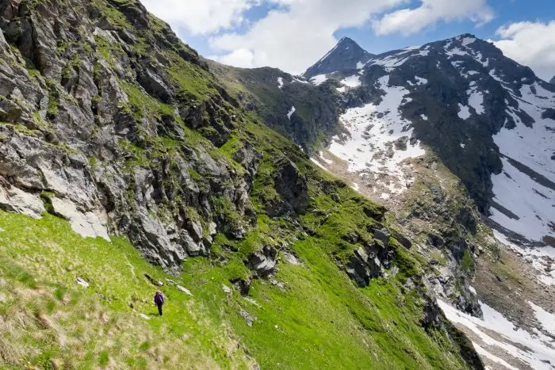
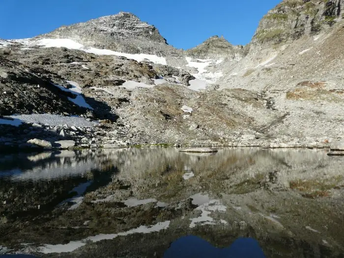
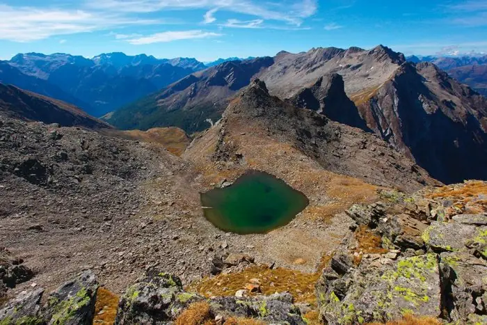

High route in Val Carassino
From Compietto to the hut, high up via Sgiu, La Colma, Pinadee and Bresciana.
- Length
- 7.5 km
- Ascent
- +1050 m
- Time
- 5 h
- Difficulty
- T5
Five traverses to other huts, from the high route in Val Carassino to the Via Crio.
If you have several days, these hiking and mountain routes reveal little-known corners of Val Carassino. They are not circuits: they link the hut with other huts. The high route in Val Carassino can be walked in both directions and avoids going along the valley floor twice if you start or finish at the Luzzone; the Cassimoi-Cassinello traverse is a superb ridge walk; the Bocchetta di Fornee opens the way to Vals; the crossing to Quarnei is a popular classic, also for families with children.
From Compietto to the hut, high up via Sgiu, La Colma, Pinadee and Bresciana.

Pizzo Amianto and its ancient landslide, the sheep ledges, chamois, ibex and the eagle.

The traces of the retreating glacier, rocks and ibex, towards Vals.

The Bresciana glacier and its decline, the lateral moraines, the roches moutonnées, the lake of Cadabi and the Quarnei plain.

Three three-thousanders on one of the most demanding stages of the Via Crio.